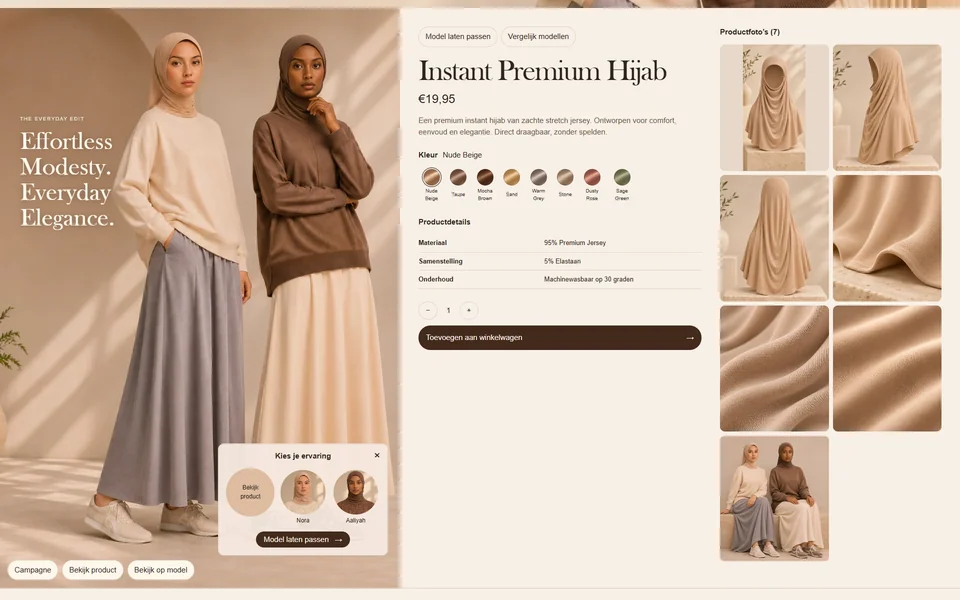
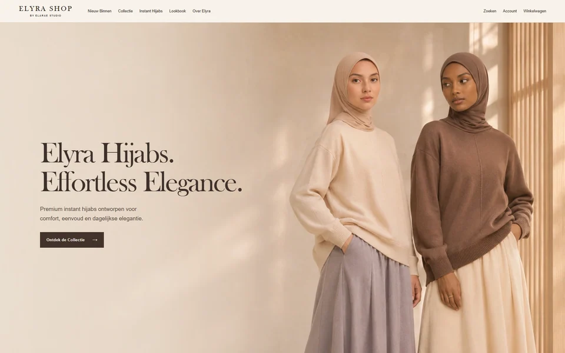
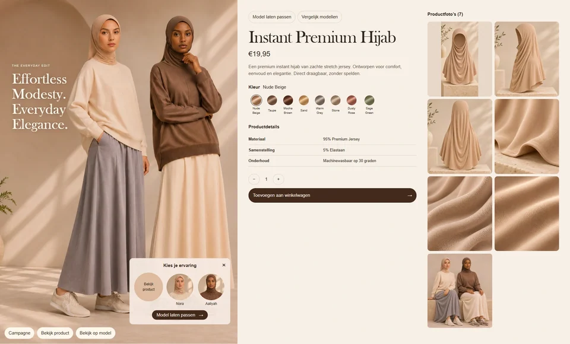
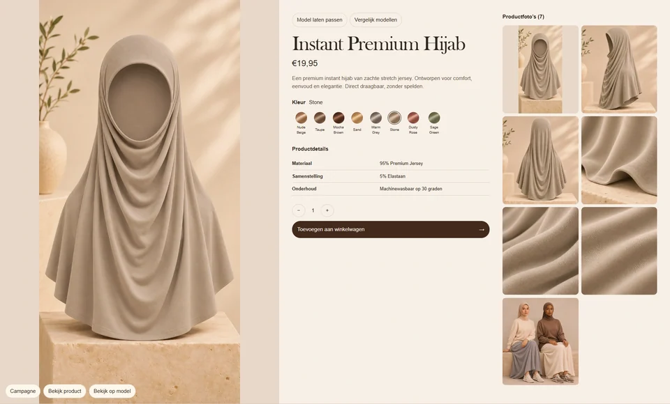
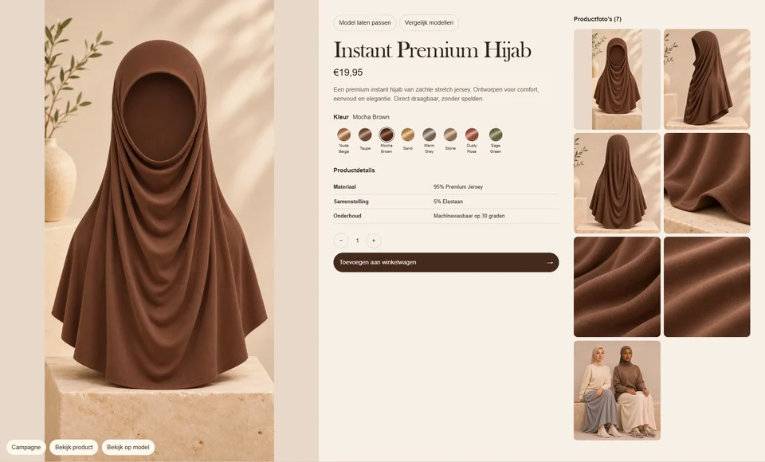
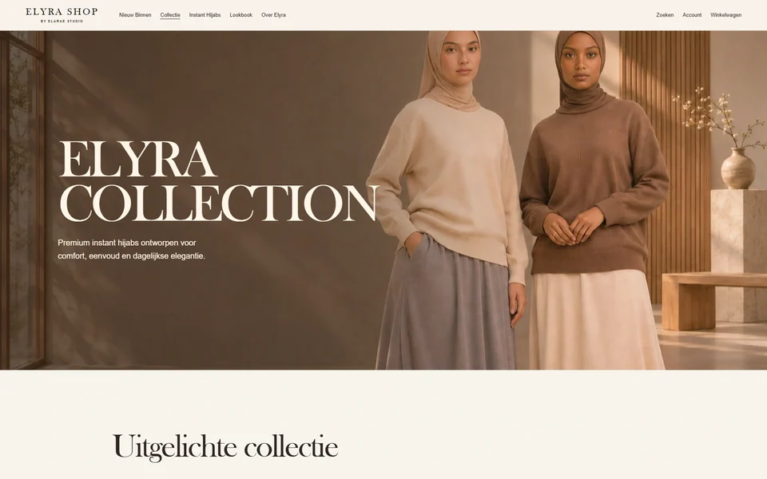
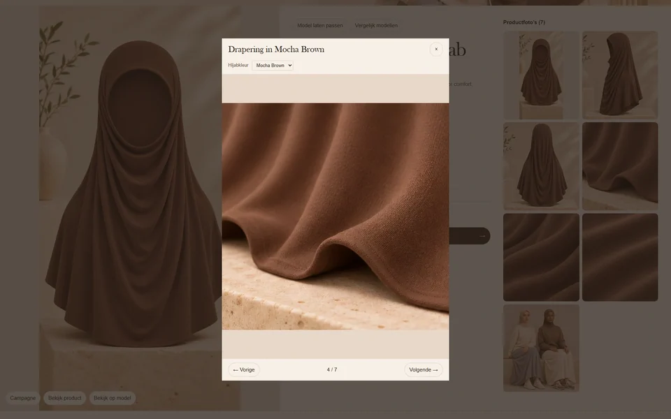
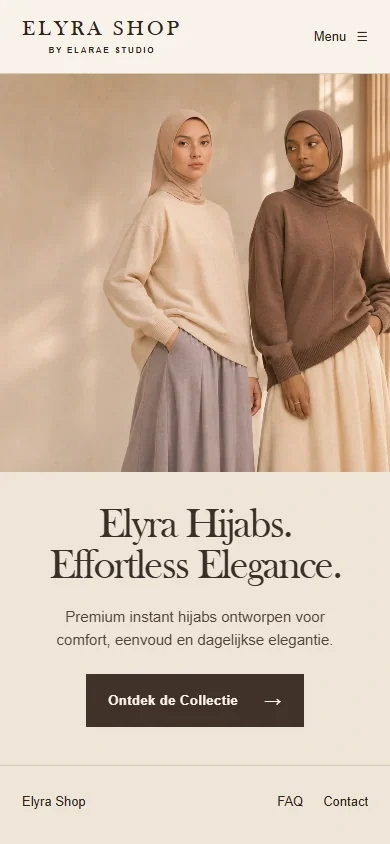
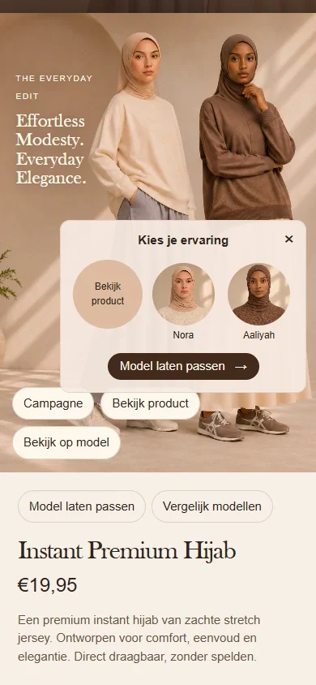

Elarae Studio / Modest fashion · E-commerce concept / Case study
Elyra Shop
Een duidelijke keuze begint bij de structuur.
Een conceptuele webshop waarin uitstraling en bediening dezelfde richting volgen.
De uitdaging was om persoonlijke keuzes zichtbaar te maken binnen een rustige fashionpresentatie. Daarom blijven model- en kleurkeuze verbonden met het productbeeld en de stofdetails. De uitgewerkte ervaring laat bezoekers modellen en kleuren vergelijken, met een consistente presentatie op desktop en mobiel.
Van eerste indruk naar keuze.
De montage volgt de winkelroute: oriënteren, vergelijken en kiezen. De winkelwagen bevestigt de selectie. Zo blijven de uitstraling en de bediening in dezelfde reeks zichtbaar.
De ontwerpaanpak in beeld
De route in beeld.Een montage van de bestaande schermen en projectbeelden.
15 sec. · Zonder geluid · Werkelijke projectbeeldenBekijk het nieuwe montageconcept · 15 seconden
Een afspeelbare beeldenreeks van echte schermopnamen. Dit is een montageconcept; de showcase hierboven blijft de bestaande film.

- Het volledige productsysteem
Begin op het complete productscherm. Een subtiele push houdt campagne, informatie en galerij samen zichtbaar.
- Eerst de kijkwijze kiezen
De cursor opent de modelkeuze. De werkelijke interface geeft de overgang aan.
- Een keuze werkt overal door
Nora wisselt van Stone naar Mocha Brown. Camera en framing blijven op hun plaats.
- Vergelijken binnen dezelfde logica
Aaliyah verschijnt in dezelfde twee varianten, met dezelfde schermuitsnede.
- Verdiepen zonder omweg
De productgalerij opent binnen dezelfde context. Eén gericht detail vervangt decoratieve macroshots.
- Van keuze naar bevestiging
De gekozen variant wordt toegevoegd. De winkelwagen bevestigt kleur, aantal en totaal.
- Een rustige signatuur
Een zachte overgang naar Elarae Studio sluit de route af. Geen extra effecten.
Regie: één breed beeldvlak, rustige overgangen en maximaal 2% camerabeweging. Keuze, vergelijking en bevestiging vormen de verhaallijn. De beeldenreeks is een conceptpresentatie, geen nieuwe 4K-film.
Een opening met één duidelijke ingang.
Merkbeeld, kernboodschap en hoofdactie bepalen de opening. De foto laat ruimte voor tekst; de donkere knop krijgt voorrang binnen het rustige palet. De homepage biedt daarmee één logische ingang voordat meer keuze wordt getoond.

Verschil in rol, verschil in vorm
Serifkoppen dragen de visuele signatuur. Zakelijke interfacetekst ondersteunt het lezen en handelen. De typografie maakt die taakverdeling zichtbaar.
Contrast op het beslispunt
Neutrale kleuren houden de omgeving rustig. Donkere acties en gemarkeerde opties trekken aandacht waar een beslissing nodig is.
Keuze in de juiste volgorde
De opening leidt naar het overzicht. Pas daar krijgt het aanbod meer ruimte. Dat voorkomt dat de eerste indruk direct een afweging tussen veel opties vraagt.
Eén selectie, overal herkenbaar.
Opties, beelden en informatie delen dezelfde selectiestatus. De gekozen variant wordt benoemd en gemarkeerd; galerij en vergroting volgen mee. Daardoor blijft duidelijk welke optie wordt bekeken, ook tijdens het verdiepen.



Stone is geselecteerd. Naam, gemarkeerde optie en productbeelden tonen dezelfde keuze.
Mocha Brown volgt dezelfde logica. De beelden veranderen mee; de indeling en bediening blijven op hun plaats.
Waarde voor het merk
Een keuze werkt door in het hoofdbeeld, de galerij en de vergroting. Die afstemming houdt de actieve variant herkenbaar tijdens het vergelijken.
Waarde voor de bezoeker
De vergroting opent binnen de bestaande context en ondersteunt pijltoetsen. Extra detail vraagt zo geen nieuwe pagina of hernieuwde selectie.
Van overzicht naar keuze.
Productkaarten maken het aanbod scanbaar. De detailpagina groepeert prijs, eigenschappen en opties rond één actie. Aanvullende beelden geven verdieping zonder de hoofdroute te verlaten.


Het overzicht ondersteunt het vergelijken. De vergroting geeft extra detail binnen de bestaande pagina, zonder de gekozen variant te verliezen.
Een duidelijke vervolgstap
De winkelwagen bewaart variant en aantal. Een bevestiging na toevoegen en een zichtbaar totaal maken de uitkomst van de handeling duidelijk. Lokale opslag houdt de selectie beschikbaar bij een volgend bezoek in dezelfde browser.
Consistent op elk scherm.
Op mobiel blijven de beslissingen in dezelfde volgorde staan: oriënteren, kiezen, verdiepen. Een verticale route houdt keuzes bereikbaar en informatie leesbaar. Dezelfde visuele rangorde begeleidt de bezoeker, ook wanneer de ruimte verandert.


Beeld en bediening krijgen ruimte volgens hun taak. Detailbeelden blijven bereikbaar zonder de gekozen optie uit het oog te verliezen.
De samenhang zit in de keuzes.
- Eén herkenbare hoofdactie per context
- Visuele hiërarchie voor informatie en opties
- Duidelijke feedback op een selectie
- Gesynchroniseerde productweergaven
- Verdieping binnen de productcontext
- Lokale opslag van de winkelwagen
Van ontwerp naar uitvoering.
De uitvoering houdt navigatie, inhoud en selectiestatus op elkaar afgestemd. De onderstaande middelen ondersteunen die samenhang.
Een concreet uitvoeringsbesluit
Eén keuze stuurt alle productweergaven.
- Variant selecterenLegt de actieve keuze vast.
- Beelden afstemmenWerkt hoofdbeeld, galerij en vergroting bij.
- Keuze bewarenKoppelt variant en aantal aan de winkelwagen.
De actieve variant is het gezamenlijke uitgangspunt. Daardoor sluit de verdieping aan op wat al gekozen is; de lokale winkelwagen bewaart die keuze in dezelfde browser.
Strategie
- Route van oriëntatie naar beslissing
- Prioritering van informatie
- Samenhang tussen merk en winkelervaring
Design
- Visuele hiërarchie en merkvertaling
- Interactieontwerp voor keuze en feedback
- Responsive overzichts- en detailpagina’s
Development
- Semantische paginaopbouw
- Gedeelde selectiestatus voor beeld en opties
- Dialogen en lokaal bewaarde winkelwagen
09 / Eindresultaat
Eén merkervaring.
Tot in elke keuze.
Voor Elyra Shop ontwierp Elarae Studio één doorlopende merkervaring: van eerste indruk tot bevestigde keuze. Modelweergave, productinformatie en winkelactie volgen dezelfde selectie.
Zo laat het concept zien hoe een uitgesproken visuele identiteit en een heldere winkelroute elkaar versterken.
Bespreek jouw projectZelfstandig e-commerceconcept.Variantselectie en winkelwagen werken lokaal. Betalingen, accounts en orderverwerking zijn niet gekoppeld. Er zijn geen verkoopresultaten gemeten.